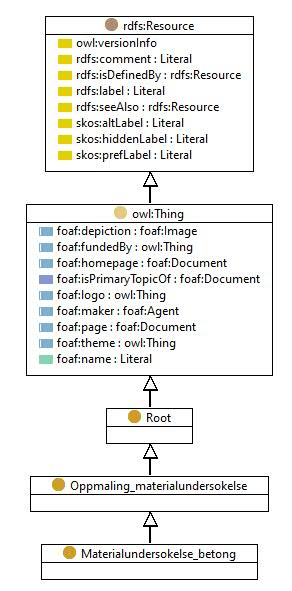

https://ontologi.atlas.vegvesen.no/v441/core/v441-owl#Materialundersokelse_betong
Class Materialundersokelse_betong

rdf:type
-
 |
owl:Class |
|
rdfs:label
-
 |
Materialundersøkelse - betong
|
-
 |
Material analysis - concrete
|
|
rdfs:subClassOf
-
|
owl:disjointUnionOf
-
 |
[Impulse_Response,
Strukturanalyse,
Opphugning_korrosjonsbedommelse,
Armeringslokalisering_betongoverdekning,
Fasthetsbestemmelse,
Korrosjonsundersokelse_EKP,
Maling_karbonatiseringsdybde,
Ultralyd,
Maling_rissvidder,
Spennkabelkontroll,
Maling_kloridinnhold,
Impact_Echo,
Termokamera]
|
|
|
References |
- as owl:disjointUnionOf (Oppmaling_materialundersokelse)
- as rdfs:subClassOf (Korrosjonsundersokelse_EKP, Termokamera, Maling_rissvidder, Maling_kloridinnhold, Armeringslokalisering_betongoverdekning, Maling_karbonatiseringsdybde, Impact_Echo, Opphugning_korrosjonsbedommelse, Fasthetsbestemmelse, Impulse_Response, Ultralyd, Spennkabelkontroll, Strukturanalyse)
|
Generated with TopBraid Composer
by TopQuadrant, Inc.